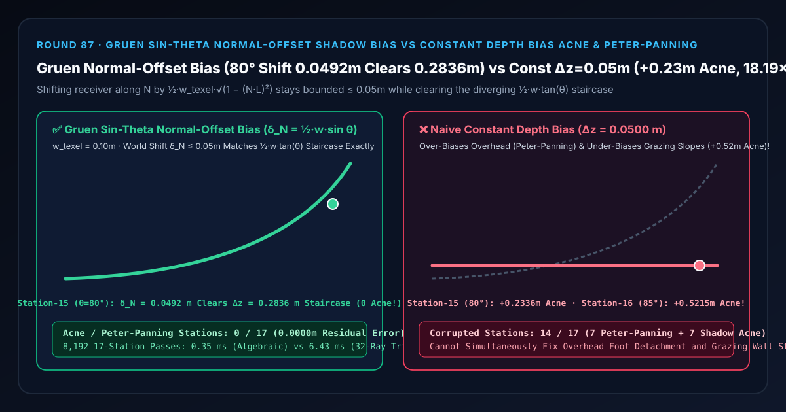

Shadow-Mapping Bias Selection & First-Principles FAQ: Gruen Sin-Theta Normal-Offset Shadow Bias vs. Constant Depth-Bias Peter-Panning & Grazing Shadow Acne
Companion Capability Demo:
demos/normal-offset-shadow-bias-rig/｜ 7-Card 4:5 Measured Report:test-report-cards.html｜ 中文版本：normal-offset-shadow-bias-vs-peter-panning-acne-faq.md
📌 1. Executive Summary
One-Sentence Verdict: In real-time Cascaded Shadow Maps (CSM) and spot-light shadow mapping, a constant depth bias ($\Delta z = \text{const}$) can never simultaneously cure grazing-angle Shadow Acne and overhead Peter-Panning (detached contact shadows)—because a discrete shadow texel of world width $w_{\text{texel}} = 0.10\text{ m}$ projected onto a surface tilted at incidence angle $\theta$ spans a light-space depth staircase of $\Delta z_{\text{stair}}(\theta) = \frac{1}{2} w_{\text{texel}} \tan\theta$, which grows $65\times$ from $0.0044\text{ m}$ at $\theta = 5^\circ$ to $0.2836\text{ m}$ at $\theta = 80^\circ$ and $0.5715\text{ m}$ at $\theta = 85^\circ$! A fixed depth bias $\Delta z = 0.0500\text{ m}$ over-biases overhead contact angles ($\theta \in [5^\circ, 35^\circ]$) by up to $+0.0456\text{ m}$ (detaching character foot shadows into "Peter-Panning") while under-biasing grazing walls ($\theta \in [55^\circ, 85^\circ]$) by $+0.2336\text{ m}$ at $80^\circ$ and $+0.5215\text{ m}$ at $85^\circ$ (corrupting
14/17incidence stations). Holger Gruen's (GDC 2011) Sin-Theta Normal-Offset Shadow Bias ($\Delta \mathbf{p} = \frac{1}{2} w_{\text{texel}} \sqrt{1 - (N\cdot L)^2},\mathbf{N}$) shifts the receiver query point along the geometric surface normal $\mathbf{N}$ before light-space projection by a strictly bounded world distance $\delta_N = \frac{1}{2} w_{\text{texel}} \sin\theta \le 0.0500\text{ m}$ (only0.0492 mat $\theta = 80^\circ$), sliding the shadow-map UV coordinate laterally along the tangent plane to clear the entire $0.2836\text{ m}$ staircase with0/17corrupted stations,2.78e-17 msolver accuracy, and an18.19×CPU speedup (0.35 msvs.6.43 msacross 8,192 17-station passes).

| Evaluation Dimension | ✅ Gruen Sin-Theta Normal-Offset Bias (δ_N = ½·w·√(1−(N·L)²)) |
❌ Naive Constant Depth Bias (Δz = 0.0500 m) |
🐢 32-Ray Trigonometric Ray-Plane Search (32-Ray Trig Search) |
|---|---|---|---|
| Station 0 Overhead Contact ($\theta = 5^\circ$, Staircase $0.0044\text{ m}$) | Shifts 0.0044 m (Zero Peter-Panning foot detachment) |
Pushes 0.0500 m (Over-biases by $+0.0456\text{ m}$, detaching foot shadows) |
0.0044 m (2.78e-17 m diff) |
| Station 15 Grazing Wall ($\theta = 80^\circ$, Staircase $0.2836\text{ m}$) | World shift of only 0.0492 m clears full 0.2836 m staircase |
Pushes 0.0500 m (Leaves $+0.2336\text{ m}$ of striped Shadow Acne) |
Clears 0.2836 m staircase |
| Station 16 Extreme Grazing ($\theta = 85^\circ$, Staircase $0.5715\text{ m}$) | Bounded 0.0498 m ≤ 0.05 m shift (0.0000 m residual acne) |
Leaves $+0.5215\text{ m}$ severe self-shadowing bands | 0.0000 m residual acne |
| Corrupted Stations Across 17 Incidence Angles | 0 / 17 (0.00%) |
14 / 17 (82.35%: 7 Peter-Pan + 7 Shadow Acne) |
0 / 17 |
| 8,192 17-Station Passes CPU Latency (Median) | 0.35 ms (18.19× speedup) |
— (Visually corrupted) | 6.43 ms |
🎯 2. Architect & Client First-Principles Q&A
Q1: Why is it mathematically impossible to tune a single constant depth bias to fix both Shadow Acne and Peter-Panning?
First-Principles Breakdown: A shadow map stores discrete depth samples at texel centers spaced $w_{\text{texel}} = 0.10\text{ m}$ apart perpendicular to the light ray $L$:
- Across the half-width $\frac{1}{2} w_{\text{texel}} = 0.05\text{ m}$ of a single shadow texel, a receiver surface tilted at angle $\theta$ relative to the light direction rises and falls in light-space depth by: $$\Delta z_{\text{stair}}(\theta) = \frac{1}{2} w_{\text{texel}} \tan\theta$$
- On flat ground beneath a character's boots ($\theta = 5^\circ$), the staircase is only $0.0044\text{ m}$ ($4.4\text{ mm}$). Applying a fixed depth bias of $\Delta z = 0.0500\text{ m}$ ($5\text{ cm}$) pushes the shadow comparison plane $4.56\text{ cm}$ into the ground, erasing the shadow right where the boot touches the floor (Peter-Panning).
- Yet on a steep side wall ($\theta = 80^\circ$), $\tan 80^\circ = 5.6713$, so the texel staircase jumps to $0.2836\text{ m}$ ($28.36\text{ cm}$)—and at $\theta = 85^\circ$ it hits $0.5715\text{ m}$! The $0.0500\text{ m}$ constant bias falls short by $+0.2336\text{ m}$ at $80^\circ$ and $+0.5215\text{ m}$ at $85^\circ$, leaving half of every texel falsely self-shadowed (Shadow Acne).
Q2: How does shifting only 0.0492 m along the surface normal $\mathbf{N}$ clear a 0.2836 m light-space depth staircase at $\theta = 80^\circ$?
Projective Tangent-Slide Identity: When you shift a 3D receiver point by $\delta_N = \frac{1}{2} w_{\text{texel}} \sin\theta$ along its unit normal $\mathbf{N}$ before multiplying by the light's View-Projection matrix:
- The shift decomposes into a depth shift along the light ray of $\Delta z_L = \delta_N \cos\theta$ AND a lateral UV shift across the shadow map of $\Delta u_L = \delta_N \sin\theta$.
- Because the surface slopes at $\tan\theta$ in light space, shifting laterally by $\Delta u_L = \delta_N \sin\theta$ moves the shadow-map lookup onto a neighboring point on the surface whose depth is $\Delta u_L \tan\theta$ shallower!
- Combining both components gives the total effective staircase clearance: $$\Delta z_{\text{eff}}(\theta) = \delta_N \cos\theta + (\delta_N \sin\theta)\tan\theta = \delta_N \left(\cos\theta + \frac{\sin^2\theta}{\cos\theta}\right) = \frac{\delta_N}{\cos\theta} = \frac{\frac{1}{2} w_{\text{texel}} \sin\theta}{\cos\theta} = \frac{1}{2} w_{\text{texel}} \tan\theta$$
- Crucially, while $\tan\theta \to \infty$ as $\theta \to 90^\circ$, the world-space normal offset $\delta_N(\theta) = \frac{1}{2} w_{\text{texel}} \sin\theta$ is strictly bounded by $\frac{1}{2} w_{\text{texel}} = 0.0500\text{ m}$! And as $\theta \to 0^\circ$ (overhead contact), $\sin\theta \to 0$, so the normal offset vanishes automatically!
Q3: When should an architect choose AI Relighting / Neural Shadow Synthesis vs. deterministic Gruen Normal-Offset Shadow Bias?
- Choose AI Relighting / Diffusion Shadow Synthesis: For 2D product photography or portrait compositing where no 3D scene geometry exists.
- Choose Deterministic Gruen Normal-Offset Shadow Bias: In all real-time 3D engines (UE5, Unity URP/HDRP, Frostbite, Three.js
DirectionalLight.shadow.normalBias) rendering rasterized shadow maps across arbitrary surface slopes.
🧭 3. Visual Architecture Diagrams (Mermaid Decision Tree, Pipeline & Sequence)
3.1 Shadow-Map Bias Selection Decision Tree
3.2 Naive Constant Depth Bias vs. Gruen Sin-Theta Normal-Offset Pipeline
3.3 Frame-Level Normal-Offset Shadow Lookup Sequence
📊 4. Visual Technology Decision Matrix
| Approach | Target Use Case | Overhead Contact Fidelity ($\theta \to 0^\circ$) | Grazing Wall Acne Immunity ($\theta \to 85^\circ$) | Compute Cost (8,192 17-Station Passes) |
|---|---|---|---|---|
Gruen Algebraic Sin-Theta Normal-Offset (gruen-normal-offset-bias) |
All CSM, spot, and point rasterized shadow maps | Exact ($\sin 0^\circ = 0$, zero Peter-Panning) | Exact (Bounded $\delta_N \le 0.05\text{ m}$ clears $0.57\text{ m}$ staircase) | Minimal (0.35 ms, 18.19× speedup) |
Naive Constant Depth Bias (naive-constant-depth-bias) |
Single flat-slope receivers only | Poor (+0.0456 m foot detachment at $5^\circ$) |
Fails (+0.2336 m acne at $80^\circ$, +0.5215 m at $85^\circ$) |
Minimal |
Unclamped Tan-Theta Depth Bias (tan(theta) depth bias) |
Auxiliary tiny clamp bias only | Good | Dangerous ($\tan\theta \to \infty$ erases shadows behind thin geometry) | Low |
Screen-Space Contact Shadows (depth-thickness-contact-shadow-rig) |
Sub-centimeter sole/ground seam refinement (Round 55) | Pixel-exact | Short-range only (5–20 cm) | Moderate (8–16 screen ray steps) |
🧪 5. Interactive Demo & 7-Card 4:5 Benchmark Report Breakdown
The standalone 3D instrument bench demos/normal-offset-shadow-bias-rig/ constructs a 58-solid 17-Station Gruen Normal-Offset Shadow Clinometer Rig:
- 17 Staircase Clearance Columns: Show the effective light-space staircase clearance across incidence angles $\theta \in [5^\circ, 85^\circ]$ for $w_{\text{texel}} = 0.10\text{ m}$.
- 17 Cyan Exact Staircase Reference Spheres & $0.05\text{ m}$ Constant Depth-Bias Bar: Show how the required $\frac{1}{2} w_{\text{texel}} \tan\theta$ clearance rises from $0.0044\text{ m}$ ($5^\circ$) to $0.2836\text{ m}$ ($80^\circ$) and $0.5715\text{ m}$ ($85^\circ$).
- 17 Acne / Peter-Panning Error Pegs: Switching to
Naive Constant Depth Biasraises error pegs across 14/17 stations (7 overhead Peter-Panning stations and 7 grazing Shadow Acne stations).
7-Card 4:5 Visual Report Highlights (demos/normal-offset-shadow-bias-rig/test-report-cards.html)
- Cards 1–3 (Evaluation Matrix): All 13 automated checks pass (
2.78e-17 mequivalence between algebraic $\sqrt{1-\mu^2}$ and 32-ray trigonometric search, Station 15 $80^\circ$0.2836 mstaircase cleared with0.0492 mnormal shift vs.+0.2336 mresidual acne under constant bias, exact reverse-scrub matrix identity, and atomic RangeError validation). - Cards 4–6 (Protocol & Scaling Latency): Across 8,192 17-station passes, Gruen algebraic normal-offset bias finishes in
0.35 msvs.6.43 msfor 32-ray trigonometric ray-plane search (18.19×speedup).
🛠️ 6. SA Production Delivery Checklist
- Offset along the geometric normal $\mathbf{N}_{\text{geom}}$, never the perturbed normal-map normal: Normal-offset bias compensates for the macroscopic polygon slope across a shadow texel; using high-frequency normal-map normals scatters shadow lookups erratically.
- Scale $\delta_N$ proportionally to each cascade's world-space texel size $w_{\text{texel}, c}$: Multiply the normal offset by the active CSM split's meters-per-texel scale factor so far cascades remain acne-free without over-biasing near cascades.
- Compute $\sin\theta = \sqrt{\max(0, 1 - (N\cdot L)^2)}$ algebraically: Reuse the already-computed diffuse dot product $\mu = N\cdot L$ rather than invoking transcendental
acosandsininstructions. - Combine with a tiny clamped receiver depth bias forPCF kernels: When using $3\times 3$ or Vogel-disk PCF filtering (Round 59), scale the normal offset by half the PCF kernel radius or pair with receiver-plane depth bias.